This project demonstrates the deployment of an Active Directory (AD) domain using Windows Server 2022 within a virtualized environment.
Two virtual machines were created using Hyper-V to serve as domain controllers.
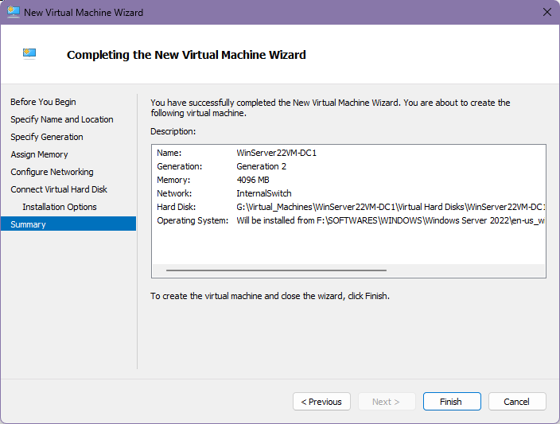 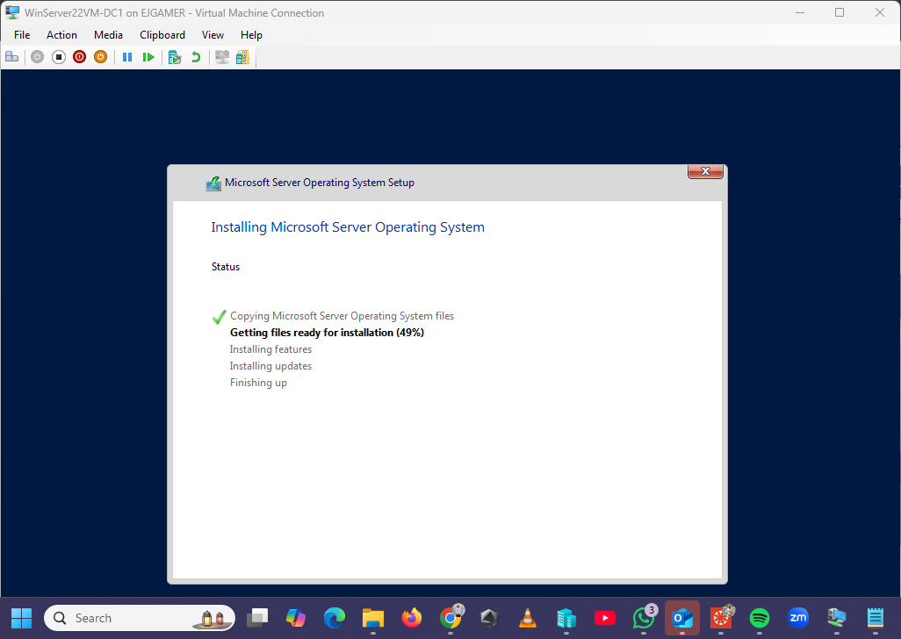 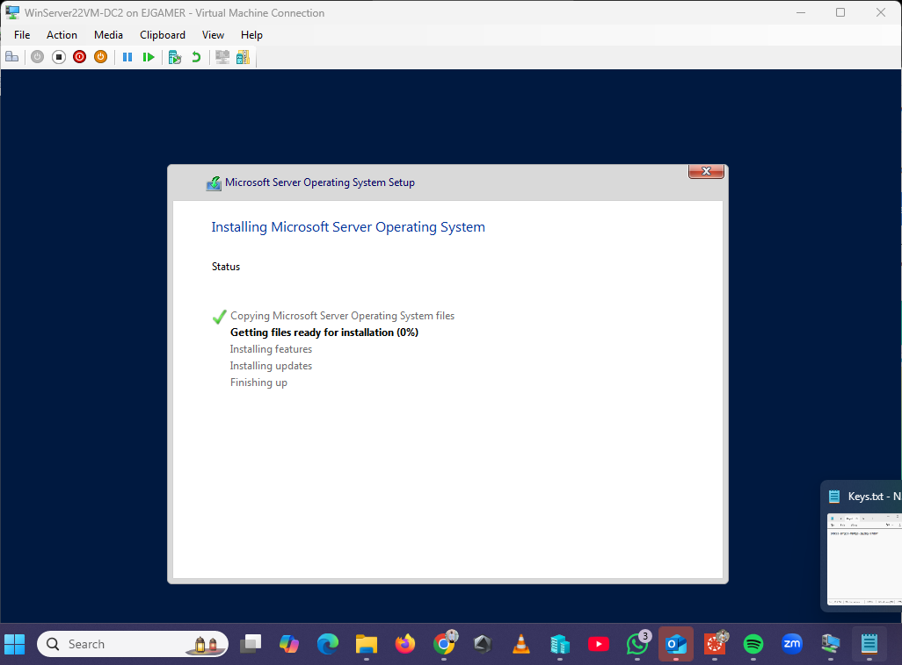 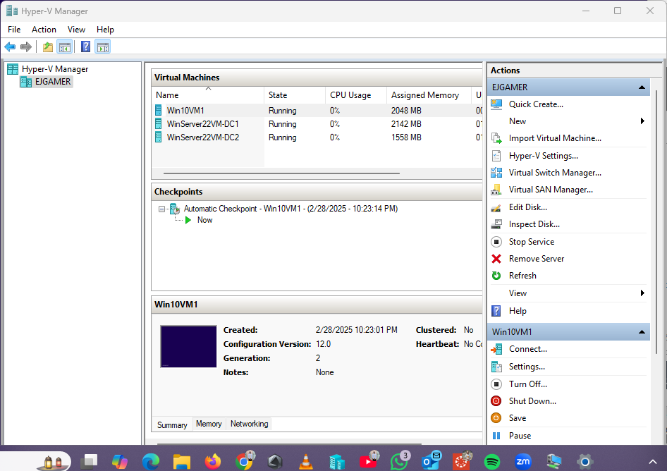Static IPs were configured to ensure network stability.
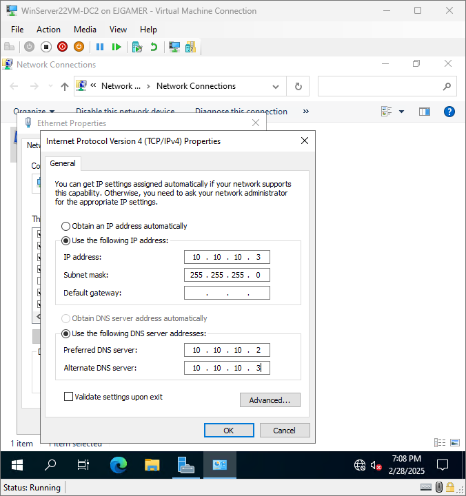 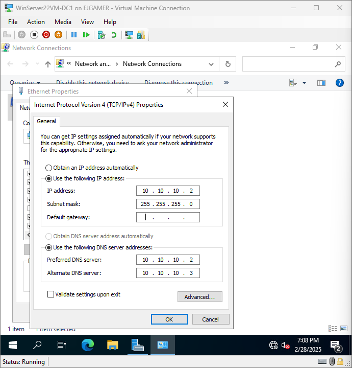Active Directory Domain Services (AD DS) was installed and configured.
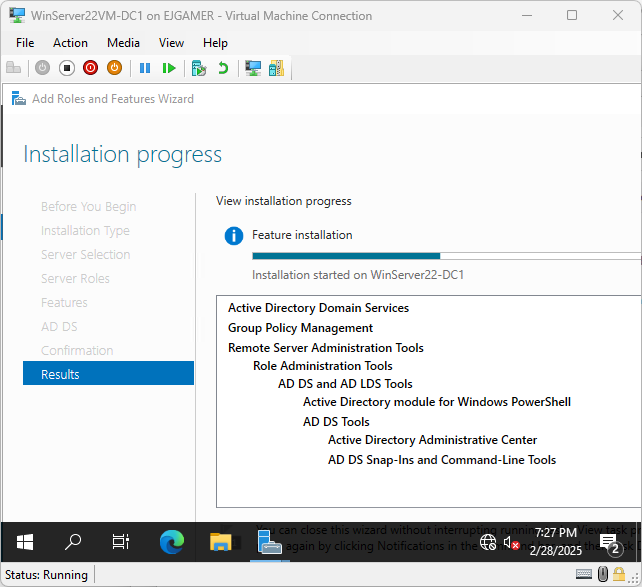 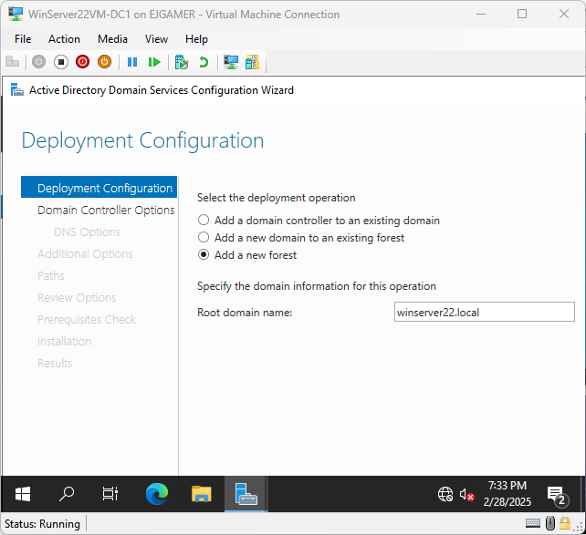 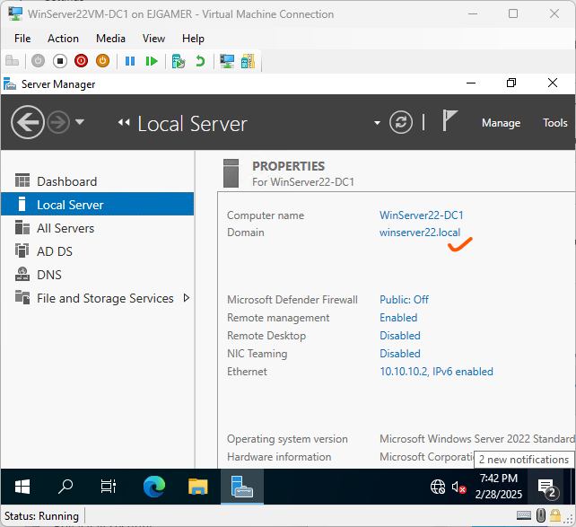WS2022-DC2 was added to the domain and set as a backup domain controller.
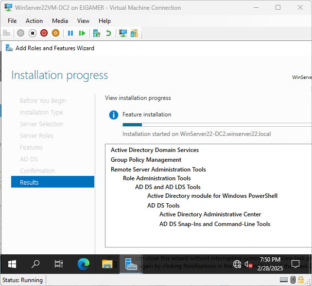 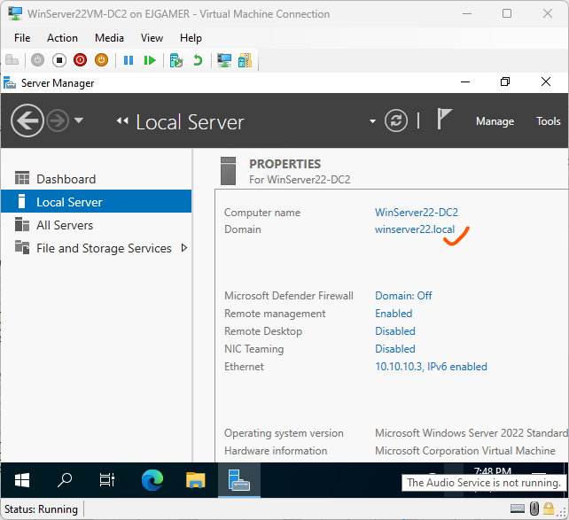Departments were structured using Organizational Units (OUs), and sample users were created.
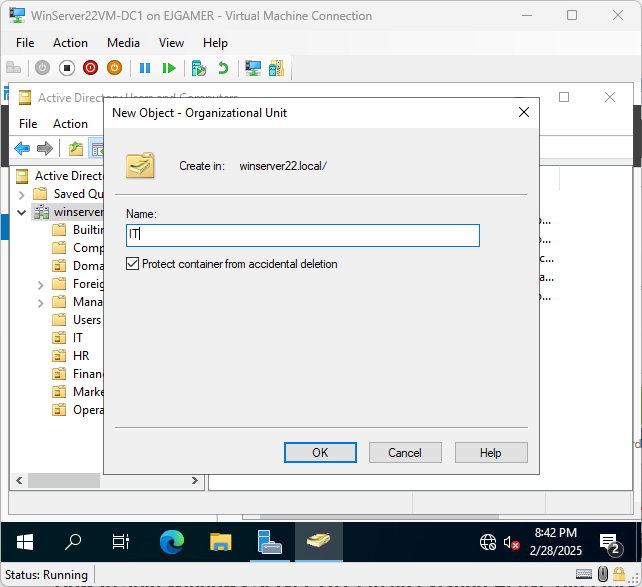 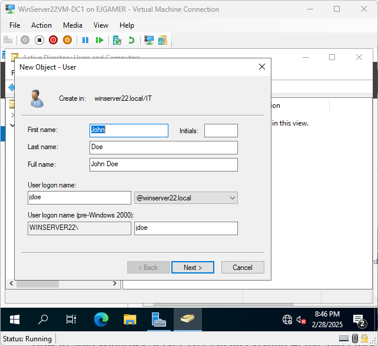 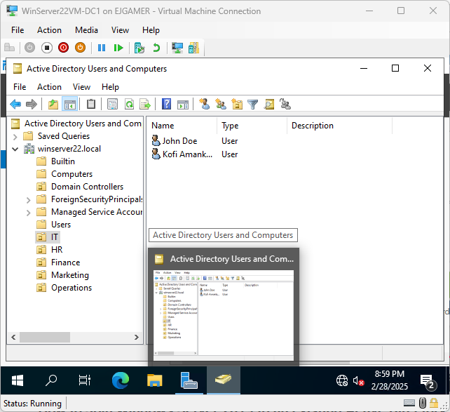GPOs were implemented to enforce policies across the domain.
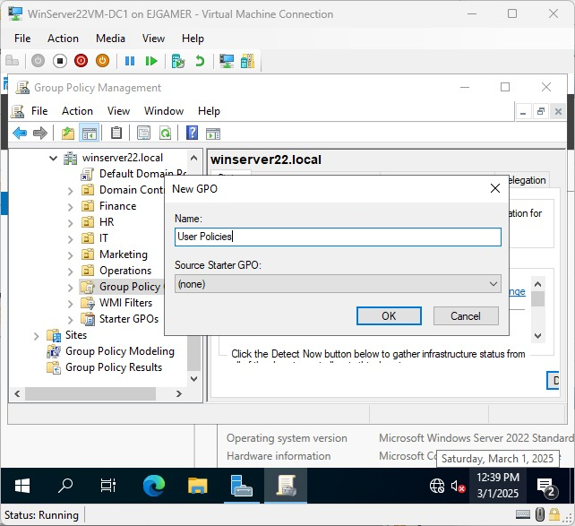 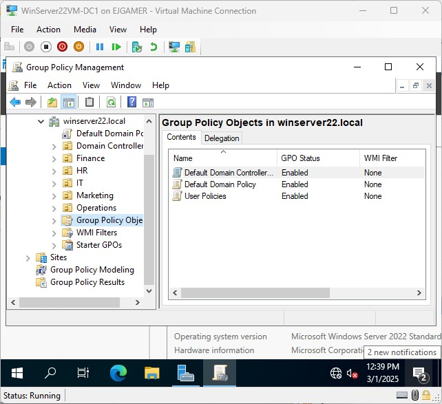User profiles were redirected to a centralized server location.
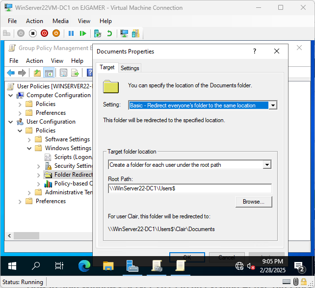Users were automatically connected to a shared drive.
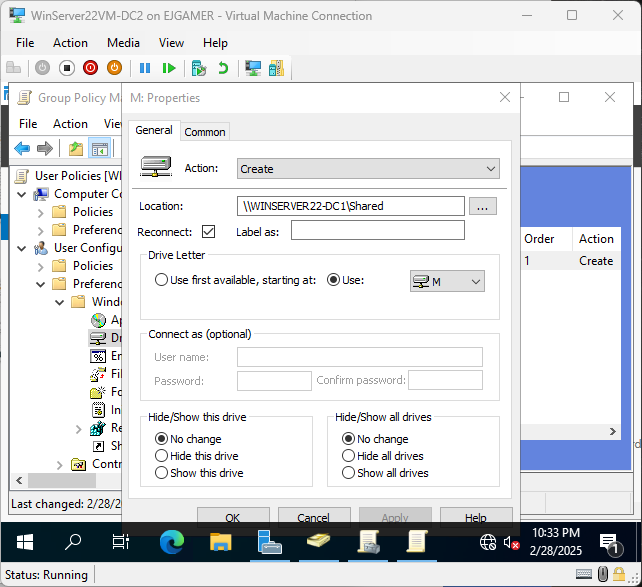 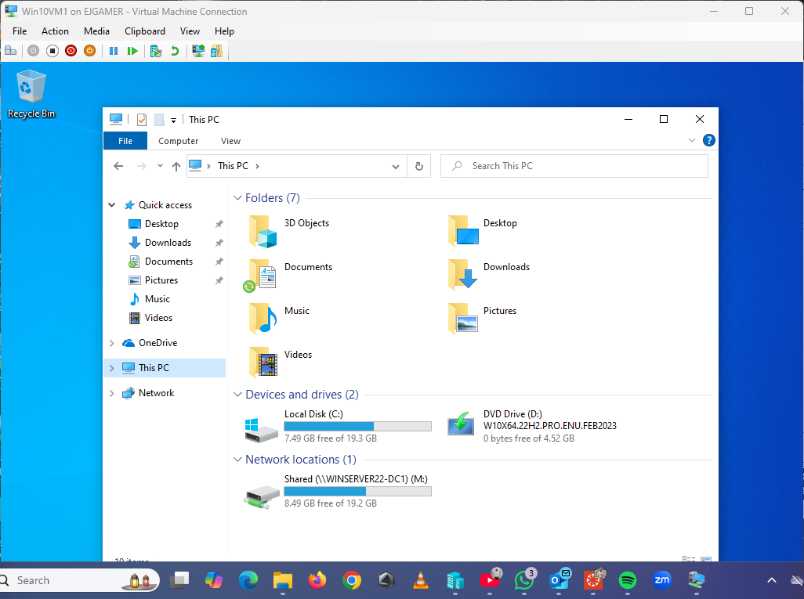Domain failover and replication between WinServer22VM-DC1 and WinServer22VM-DC2 were tested.
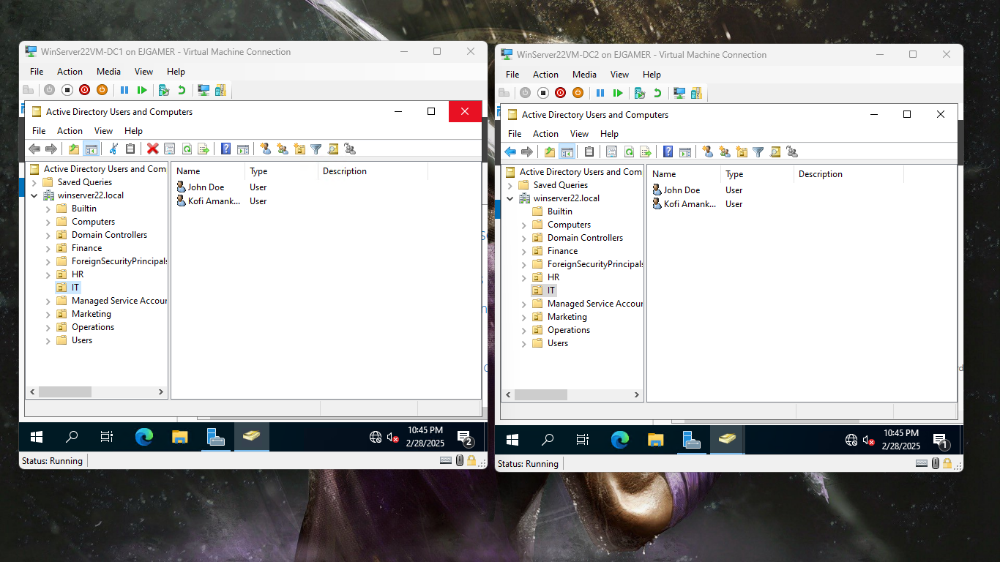This project successfully deployed a scalable, secure, and user-friendly Active Directory environment leveraging Windows Server 2022.
Technologies Used: Windows Server 2022, Hyper-V, Active Directory, Group Policy, Remote Desktop Services.